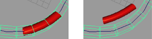

沿当前运动路径或围绕当前对象创建流动路径。
约束 > 运动路径 > 流动路径对象(Constrain > Motion Paths > Flow Path Object) > 
- 分段(Divisions)
-
这些值代表将创建的晶格部分数。“前”(Front)、“上”(Up)和“侧”(Side)与创建路径动画时指定的轴相对应。
例如，如果在创建路径动画时，“前方向轴”(Front Axis)设定为“Z”，“上方向轴”(Up Axis)设定为“Y”（在“连接到运动路径选项”(Attach to Motion Path Options)窗口中）。因此，其余的轴是“侧方向轴”(Side Axis)，即“X”轴。然后，“分段:前”(Divisions: Front)将是晶格中沿“前”(Front)方向的分段数（在这种情况下，将为对象的“Z”局部旋转轴）。“上”(Up)和“侧”(Side)选项在“分段”(Divisions)区域中类似。
晶格围绕(Lattice Around)
选择下列选项之一：
- 对象(Object)
-
创建围绕晶格的对象。
- 曲线(Curve)
-
创建围绕路径曲线的晶格。
- 局部效果(Local Effect)
-
当创建围绕曲线的晶格时，该选项最有用。如果晶格很大，当晶格点离晶格的另一端很近时，您可能不希望晶格末端的晶格点影响对象。例如，当选择“晶格围绕曲线”(Lattice Around Curve)选项，且“分段: 前”(Divisions: Front)设定为 30 时，这意味着端对端路径动画曲线将存在晶格的 30 个子分段。当对象穿越晶格时，在任一时间，它只能由 4 或 5 个分段在前端围绕。如果禁用局部效果，则 30 个子分段中的所有晶格点将影响对象的变形。这可能会导致对象“漂移”出晶格，因为它受离对象很远的晶格点的影响。
下面两个图显示“晶格围绕曲线”(Lattice Around Curve)的“局部效果”(Local effect)。在第一个图中，“局部效果”(Local effect)处于启用状态，在第二个图中，它处于禁用状态。
通常，如果“局部效果”(Local effect)处于启用状态，则“局部效果”(Local effect)分段应设定为大约为该对象将覆盖的晶格的分段数。
提示： 如果使用的是“晶格围绕对象”(Lattice Around Object)选项，并将“分段”(Divisions)数设定为较大数字，以更精确地控制对象的变形，则最好设定“局部效果”(Local effect)分段，以覆盖对象较小的部分。